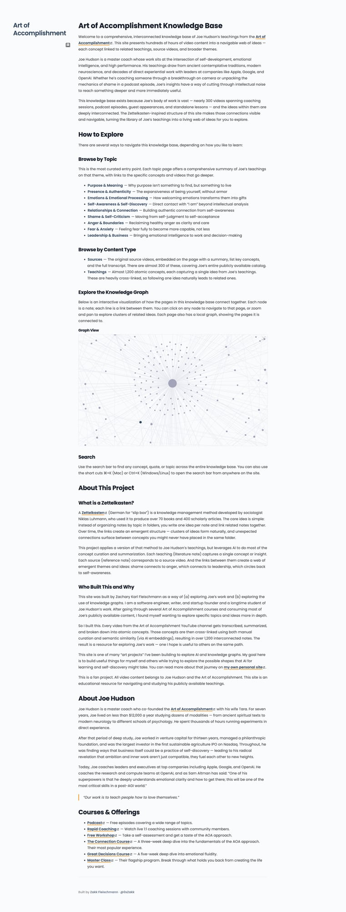
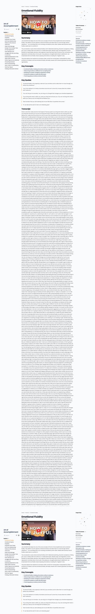
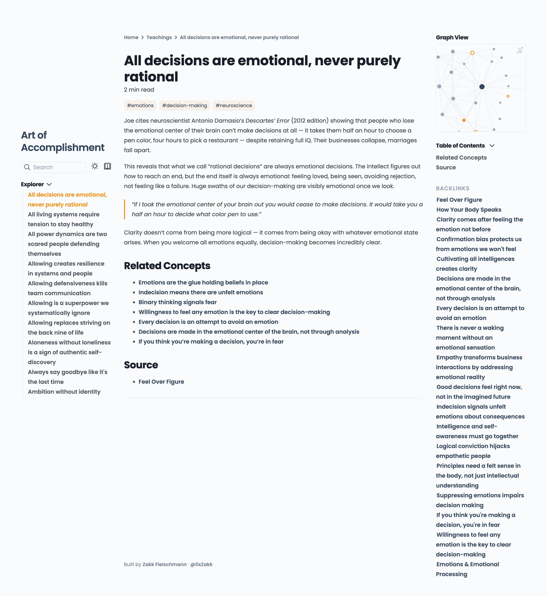
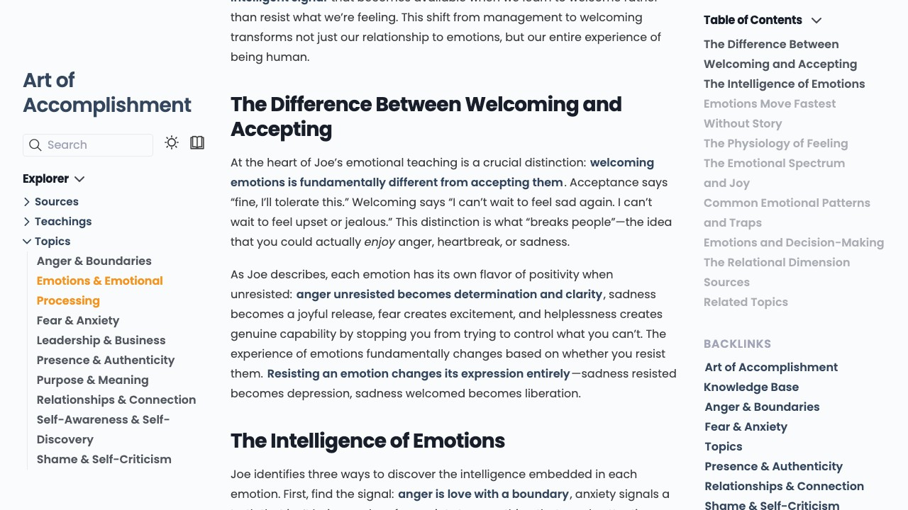
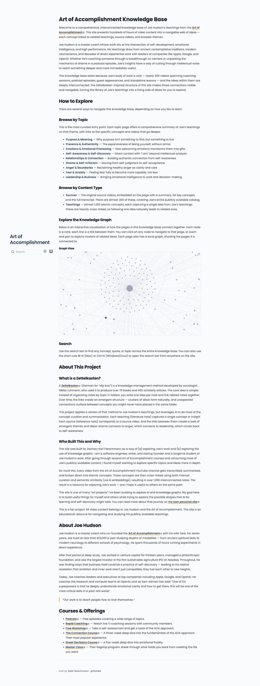

Knowledge Graphs as
Turning a Body of Work into an Explorable Landscape
Zakk Fleischmann · @0xZakk · Sensemaking Scenius
Introduce yourself. This talk is about a technique for turning large bodies of content into something navigable and explorable, using knowledge graphs. You'll show a concrete example and walk through how to build one.
The Problem
Sensemaking is Getting Harder
There's more happening than ever -- more noise and more signal
Both are increasing at the same rate -- the ratio never improves
Content is one substrate for sensemaking, but the deeper problem is we lack tools for the act of sensemaking itself
We need ways to see structure, trace connections, and navigate complexity -- regardless of what we're making sense of
The problem isn't just that there's more content. It's that sensemaking is getting harder because there's more happening -- more noise and more signal, increasing at the same rate. Content (podcasts, YouTube, papers) is one thing to make sense of, but it's just one. The broader problem is building tools for the act of sensemaking itself, regardless of the substance. We need tools that help us see structure and trace connections in any domain.
Linear Media Hides Connections
YouTube, podcasts, blog posts -- all linear
Search only works when you already know what you're looking for
The connections between ideas -- the most valuable part -- are invisible
A coaching session about anger might illuminate something said about leadership in a completely different context. But you'd never find that connection unless you watched both and remembered both.
You can search, but search only works when you already know what you're looking for. The connections between ideas are invisible. A coaching session about anger might illuminate something said about leadership in a completely different context. But you'd never find that connection unless you happened to watch both videos and remembered both.
What Sensemaking Actually Requires
Making sense of a body of work means seeing the structure -- the relationships between ideas
Not consuming linearly, but exploring
What if we could make a body of work explorable instead of just watchable?
Making sense of a body of work isn't about consuming it linearly. It's about seeing the structure -- the relationships between ideas. This is exactly what the Scenius is about. What if we could take a body of work and make it explorable instead of just watchable?
The Approach
Three Layers of an Explorable Body of Work
graph TD
subgraph "Layer 3: Curated Entry Points"
T1["Emotions & Processing"]
T2["Leadership & Business"]
T3["Relationships & Connection"]
end
subgraph "Layer 2: Atomic Ideas"
A1["Emotions move fastest
Three layers: Sources (original material), Atomic Ideas (individual concepts extracted and linkable), and Curated Entry Points (narrative guides weaving ideas into themes). The key insight: the connections between atomic ideas -- the dotted lines -- are where real sensemaking happens. An idea about emotions connects to decision-making connects to leadership, revealing patterns invisible in the original videos.
The Example: Art of Accomplishment

Joe Hudson's YouTube channel · ~300 videos · Self-development, emotions, leadership
I built this for a body of work I care about: Joe Hudson's Art of Accomplishment YouTube channel. About 300 videos on self-development, emotional processing, relationships, leadership. Walk through the homepage briefly. This is the example -- the principles apply to any body of work.
A Source Note

Embedded video · AI summary · Key concepts (linked) · Quotes · Full transcript
Each original video becomes a structured page: embedded video, AI-generated summary, key concepts as links, key quotes, and full transcript. The source note is a hub -- it links outward to the atomic ideas it contains.
An Atomic Idea (Teaching)

17 backlinks · Related concepts · Local graph visualization
This is the core unit. One idea, written as a statement: "All decisions are emotional, never purely rational." 2-3 paragraphs of explanation with a relevant quote. Related Concepts -- explicit links. Backlinks -- every other page that references this idea (the graph working in reverse). Local Graph -- visual map. Notice: 17 other teachings reference this one. That's 17 connections you'd never see watching linearly.
A Curated Entry Point

600-1200 word narrative · Every bold phrase links to a teaching
The topic page is the editorial layer. It's a 600-1200 word essay that weaves atomic ideas together into a coherent narrative. Every bold phrase is a link to a teaching. You can read it as an essay, or click into any idea and start exploring. This is where human curation matters most -- AI can extract ideas, but the narrative structure is a sensemaking act.
The Graph

Every node is a page · Every line is a link · Clusters form around themes
The full knowledge graph: every node is a page, every line is a link. You can see clusters forming around themes. Click any node to navigate there. This is the shape of a body of work -- something you could never see from a YouTube playlist.
How I Built It
The Pipeline
graph LR
A["300 YouTube
Seven steps, from raw video to explorable knowledge graph
Seven steps from raw video to explorable knowledge graph. I'll walk through each one. The orange steps -- atomic idea extraction and semantic linking -- are the most important.
Step 1: Transcript Extraction
YouTube auto-generated subtitles -- surprisingly usable
Downloaded with yt-dlp for all ~300 videos
Cleaned: stripped timestamps, removed duplicate lines
The transcript is the raw material. Without it, the knowledge is locked inside the video.
Every YouTube video has auto-generated subtitles. These are surprisingly usable -- not perfect, but good enough for AI to work with. Used yt-dlp to download subtitle files for all 300 videos, then cleaned them up: stripped timestamps, removed duplicate lines. This step makes content readable by both humans and AI.
Step 2: Source Note Generation
graph TD
V["Video Transcript"] --> AI["Claude AI"]
AI --> SN["Source Note"]
SN --> Sum["Summary"]
SN --> KC["Key Concepts
Processed in batches of 3 videos for quality consistency
Fed each transcript to Claude and asked it to produce a structured summary. Each source note includes: summary, key concepts as links, notable quotes, and full transcript. Processed in batches of 3. The source note is a structured index that makes content scannable and links it into the larger graph.
Step 3: Atomic Idea Extraction
One idea per note, written as a statement
2-3 paragraphs + relevant quote + related links
Content dictates count per video
graph LR
V1["5-min video"] --> N1["1 note"]
V2["30-min podcast"] --> N2["4-6 notes"]
V3["90-min coaching"] --> N3["10-15 notes"]
style V1 fill:#33465D,color:#fff
style V2 fill:#33465D,color:#fff
style V3 fill:#33465D,color:#fff
style N1 fill:#F5931C,color:#fff
style N2 fill:#F5931C,color:#fff
style N3 fill:#F5931C,color:#fff
This is the most important step. For each video, Claude identifies distinct ideas and writes each as a standalone note. The rule: one idea per note, written as a statement, not a label. "Emotions move fastest without story" -- not "Emotions and stories." Each gets 2-3 paragraphs, a quote, and links. 296 videos produced 1,248 atomic teaching notes at about 4.2 per video. Atomic ideas are what makes the graph explorable -- when an idea stands alone, it can connect to ideas from any source.
Step 4: Quality Control
1
non-content video removed
Human-in-the-loop: AI does the heavy lifting, but a human checks the work.
First pass isn't perfect. Some notes got created without proper links back to their source. Some source notes came out incomplete. Fixed 25 orphaned notes, reprocessed 14 incomplete sources, removed 1 non-content video (a 1-minute channel trailer). The graph is only as good as its individual nodes.
Step 5: Semantic Linking
The magic step
graph TD
A["1,248 teaching notes"] --> B["Generate embeddings
With 1,248 notes, there are over 778,000 possible pairs. No human can check them all. Used vector embeddings -- a mathematical fingerprint of each note's meaning. Two notes about similar concepts get similar vectors. Cosine similarity measures closeness: 1.0 = identical, 0.0 = unrelated. Threshold at 0.80. Result: 806 notes got new connections -- the non-obvious ones. An idea about anger linking to leadership, a coaching concept connecting to a solo teaching months later. This step turns a collection into a graph.
Step 6: Website Build
Quartz -- static site generator for knowledge graphs / digital gardensTakes markdown with wiki links, renders as navigable website
Full-text search, graph visualization, hover previews, backlinks
Fun detail: had to disable LaTeX rendering because Joe talks about money a lot and dollar signs were being interpreted as math equations.
Used Quartz, a static site generator built specifically for knowledge graphs and digital gardens. It takes the markdown files with wiki links and renders them as a navigable website with full-text search, graph visualization, hover previews (popover on link hover), and backlinks. One funny detail: had to disable LaTeX rendering because dollar signs were interpreted as math equations.
Step 7: Curation & Polish
Wrote 10 topic pages -- 600-1200 word narrative essays
Rebranded to match Art of Accomplishment's design language
Renamed folders from technical jargon to human-friendly names"literature-notes" → "teachings" · updated links in 1,500+ files
Categorized: 108 podcasts, 95 lessons, 87 coaching sessions, 5 guest appearances
Curation is the sensemaking act -- choosing how to frame ideas, what to highlight, what threads to pull.
Wrote the 10 topic pages as narrative essays weaving atomic ideas together. Rebranded the site, renamed folders from technical jargon to human-friendly names -- requiring updates in 1,500+ files. Added categorization. The curation layer makes this a sensemaking tool instead of just a database. The topic pages represent interpretation.
The Timeline: 3 Days
gantt
title Build Timeline
dateFormat YYYY-MM-DD
axisFormat %b %d
section Day 1
Transcript extraction :done, d1, 2026-01-28, 1d
Source note generation :done, d2, 2026-01-28, 1d
Atomic idea extraction :done, d3, 2026-01-28, 1d
Quality control :done, d4, 2026-01-28, 1d
Semantic linking :done, d5, 2026-01-28, 1d
section Day 2
Site rebrand :done, d6, 2026-01-29, 1d
UX improvements :done, d7, 2026-01-29, 1d
Topic pages :done, d8, 2026-01-29, 1d
section Day 3
Final polish and deploy :done, d10, 2026-01-30, 1d
AI handles extraction at scale. Humans shape the organization, thresholds, curation, design.
From zero to 1,500+ interconnected notes in 3 days. AI did the extraction; human decisions shaped the organization, the threshold, the curation, the design. This speed is new. Building a knowledge graph of this scale used to be a months-long academic project.
Why This Matters
Three Properties of Knowledge Graphs
1. Emergence
The graph reveals structure invisible in any individual source. Joe never said "here's how shame connects to leadership." The graph shows it.
2. Multiple Entry Points
No "right" way to navigate. Start from a topic, a video, a concept, or the graph itself. Understanding isn't linear -- it's a web.
3. Shared Substrate
A landscape multiple people can explore simultaneously and compare notes. Collective intelligence requires shared, navigable artifacts.
Three properties. Emergence: the graph shows structure not visible in any single source. Multiple Entry Points: there's no right way to navigate -- different paths produce different understanding. Shared Substrate: once the graph exists, a community can explore, annotate, challenge, and extend it together. This connects to the Scenius mission of cultivating collective intelligence.
The Pattern is General
A research field's papers and findings
An organization's institutional knowledge
A community's collected conversations
A thinker's works across books, lectures, interviews
A movement's ideas and debates
The pattern: scattered sources → atomic ideas → connections → navigation → curation
This isn't specific to one YouTube channel. The same approach works for any large body of interconnected content. The pattern: take scattered sources, extract atomic ideas, find connections (human + semantic), make it navigable, curate entry points.
What's the Role of AI?
AI = Extraction
Reads transcripts, identifies concepts
Handles scale: 300 transcripts → 1,248 notes in days
Surfaces connections via embeddings
Human = Curation
Decides what to extract and how to organize
Sets similarity thresholds
Authors narrative topic pages
The highest-value sensemaking work
A partnership: AI handles volume, humans handle meaning.
AI is the extraction layer -- handles scale. Humans are the curation layer -- decide what matters. The semantic linking step is interesting because it's neither: AI surfaces connections for humans to navigate. The algorithm doesn't know which connections are meaningful -- it just knows which are mathematically similar. The human explores and decides what matters. This is a partnership model.
What Could You Build a Knowledge Graph Of?
Your community's writings, talks, conversations, and research
A field you're trying to make sense of
An author's collected works
Workshop outputs, meeting notes, collaborative research
What body of knowledge would benefit most from this treatment?
Open it up for the audience to think about. What body of knowledge in their world would benefit from being turned into an explorable knowledge graph? The Scenius's own output? A field they're researching? An organization's institutional knowledge?
Open Questions
How do you handle disagreement in a knowledge graph? This maps one person's views. What about diverse, conflicting perspectives?
What's lost when you atomize ideas? Narrative flow for discoverability -- always the right trade?
Could a knowledge graph be a living , collectively maintained sensemaking artifact? What would governance look like?
How does this connect to relational governance and participatory sensemaking?
These are genuine open questions for discussion. Disagreement is a big one -- this project maps one person's views, but a community knowledge graph would have tension and debate. The atomization trade-off is real: you gain discoverability but lose narrative flow. Living, collectively maintained graphs raise governance questions. Connect to the Scenius's work on relational governance.
Explore
Stack: yt-dlp · Claude · Python (sentence-transformers) · Quartz v4
@0xZakk
Point people to the site. Mention the tech stack briefly. Thank the audience and open for discussion.